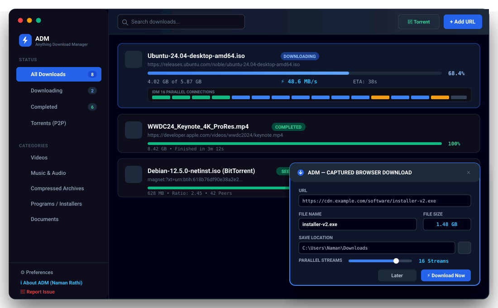

Accelerate downloads by up to 500% with up to 32 parallel chunk streams. Features auto-detection popups for all major web browsers, video stream capture, and native BitTorrent support.

Compare ADM side-by-side with commercial IDM and default browser downloaders.
| Feature | ⚡ Anything Download Manager (ADM) | Internet Download Manager (IDM) | Browser Default Downloader |
|---|---|---|---|
| Price & License | 100% Free & Open Source (MIT) | $24.95 / year (Commercial) | Free |
| Operating Systems | Windows, macOS & Linux | Windows Only | Windows, macOS, Linux |
| Multi-Stream Acceleration | Up to 32 Parallel Connections | Up to 32 Parallel Connections | Single Connection (1 stream) |
| Browser Auto-Detect Popup | Instant IDM Popup on all Browsers | Yes (Windows browsers only) | Basic bottom shelf / flyout |
| BitTorrent & Magnet Support | Built-in WebTorrent Client | No (HTTP/FTP only) | No |
| Video Stream Sniffer | On-screen HTML5 Video overlay | Yes | No |
| User Interface | Modern React 19 Dark Aesthetic | Legacy Windows 98/XP skin | Standard browser UI |
Files are sliced into up to 32 parallel chunks downloaded simultaneously via HTTP Range headers, maxing out your internet pipeline.
Clicking any download link on Chrome, Firefox, Edge, or Brave automatically summons the IDM download popup with filename, size, and destination.
No need for separate torrent software. ADM downloads .torrent files and magnet links with real-time peer monitoring and seeding controls.
Detects video playback on web pages and displays a one-click "Download Video" pill over HTML5 players.
Powered by embedded SQLite with JSON fallback, every chunk offset is persisted safely so interrupted downloads resume instantly.
Engineered with unpacked native binaries, static fallbacks, and multi-arch bundles so Windows, macOS, and Linux run out of the box.
Choose your platform below or download the latest standalone binaries directly from GitHub Releases.
64-bit & 32-bit NSIS installer with desktop shortcut and portable edition.
Apple Silicon (M1/M2/M3/M4) & Intel 64-bit DMG package.
Standalone AppImage, Debian package (.deb), and Red Hat (.rpm).
Connect Chrome, Firefox, Edge, Brave, or Opera in under 30 seconds.
Navigate to chrome://extensions in Chrome/Brave/Edge or about:debugging in Firefox.
Toggle the Developer mode switch in the top-right corner of the extensions tab.
Click Load unpacked and select the browser-extension folder inside the ADM folder.
127.0.0.1:28370. No configuration required!
Creator & Lead Architect
Created Anything Download Manager to give developers and users across Windows, macOS, and Linux a truly open, unrestricted, high-speed download manager free from commercials, crack tools, or trial expirations.